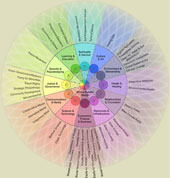

Examples of Other Flow Funds
In 2008, the Flow Fund Circle began collaborating with three different collectives who showed wisdom, generosity of spirit and community leadership. These collectives, Beyond Boundaries, The Tipping Point Network, and The International Council of Thirteen Indigenous Grandmothers received funds to give away for a three year period.
Beyond Boundaries Flow Fund
Beginning in June of 2009, a small group of leaders of diverse ages and backgrounds began an international service pilgrimage called Beyond Boundaries (BB). The pilgrimage moves through a number of places, centers and communities in the United States, Europe, Asia and Oceania that are exploring the frontiers of creative, peaceful, and regenerative life. Beyond Boundaries is committed to experiential education, cross-cultural community exchange, leadership development and a deep personal and collective inquiry into the pressing issues and needs of our times. Participants listen and learn from the people and places they visit and offer their support and service work, using their own variety of gifts and experience.
The Tipping Point Network Flow Fund

The Tipping Point Network Flow Fund is a self-organizing network of collaborative, high-integrity philanthropic leaders and social innovators in widely diverse fields envisioning and catalyzing a whole system shift from survival to sustained abundance.By choosing leaders who give back most, this network creates a strategy of generosity.
The International Council of Thirteen Indigenous Grandmothers Flow Fund
Empowered to make grants to projects in their homelands, has donated over $300,000 to projects around the world, such as:
~ Sponsoring five Tibetan children in Dharamshala, Himachal Pradesh, INDIA for ten years through the
~ Researching the health effects of uranium mining on the Lakota Pine Ridge reservation in South Dakota, USA through the work of
~
Sponsoring a Seed Bank in Pojoaque Pueblo, New Mexico, USA through the